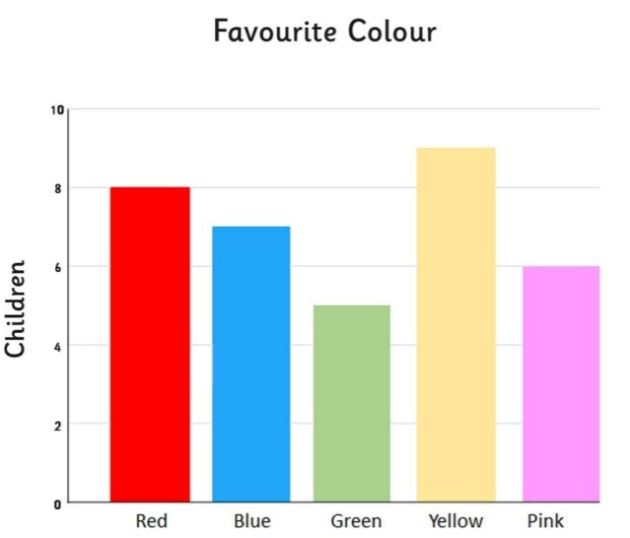

Graphs
In mathematics, graph theory is the study of graphs, which are mathematical structures used to model pairwise relations between objects. A graph in this context is made up of vertices (also called nodes or points) which are connected by edges (also called links or lines). A distinction is made between undirected graphs, where edges link two vertices symmetrically, and directed graphs, where edges link two vertices asymmetrically; see Graph (discrete mathematics) for more detailed definitions and for other variations in the types of graph that are commonly considered. Graphs are one of the prime objects of study in discrete mathematics.
Types of Charts
There are several different types of charts and graphs. The four most common are probably line graphs, bar graphs and histograms, pie charts, and Cartesian graphs. They are generally used for, and are best for, quite different things.
Bar Graphs and Histograms
Bar graphs generally have categories on the x-axis, and numbers on the y-axis (but these are interchangeable). This means that you can compare numbers between different categories. The categories need to be independent, that is changes in one of them do not affect the others. Here is a summary of 'some data' in a data table:
You can see immediately that this graph gives you a clear picture of which category is largest and which is smallest. It gives a clear comparison between categories. You can also use the graph to read off information about how many are in each category without having to refer back to the data table, which may or may not be provided with every graph you see. In general, you can draw bar graphs with the bars either horizontal or vertical, because it doesn’t make any difference. The bars do not touch. A histogram is a specific type of bar chart, where the categories are ranges of numbers. Histograms therefore show combined continuous data.
Pie Charts
A pie chart looks like a circle (or a pie) cut up into segments. Pie charts are used to show how the whole breaks down into parts. For example, this data shows the sales figures for a year, broken down by quarters:
From the pie chart you can see immediately that sales in Quarter 1 were much bigger than all the others: more than 50% of total annual sales. Quarter 2 was next, with around 25% of sales. Without knowing anything more about this business, you might be concerned about the way that sales appeared to have dropped over the year. Pie charts, unlike bar graphs, show dependent data. The total sales in the year must have to have occurred in one quarter or another. If you’ve got the figures wrong, and Q1 should be smaller, one of the other quarters will have sales added to compensate, assuming that you haven’t made a mistake with the total. Pie charts show percentages of a whole - your total is therefore 100% and the segments of the pie chart are proportionally sized to represent the percentage of the total. For more on percentages see our page: Introduction to Percentages. Usually it is not appropriate to use pie charts for more than 5 or 6 different categories. Lots of segments are difficult to visualise and such data may be better displayed on a different type of chart or graph.

These were some of the Graphs and Charts to be dealt with.